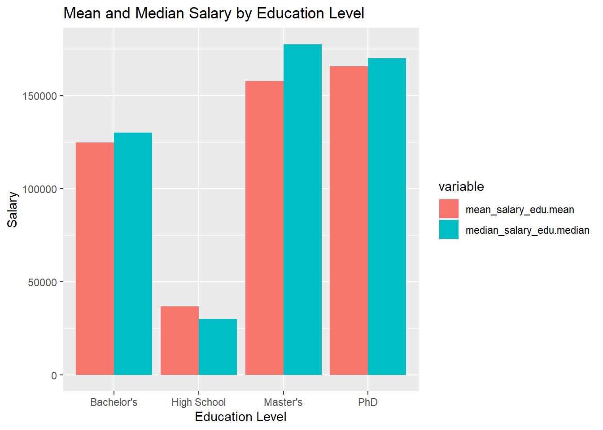
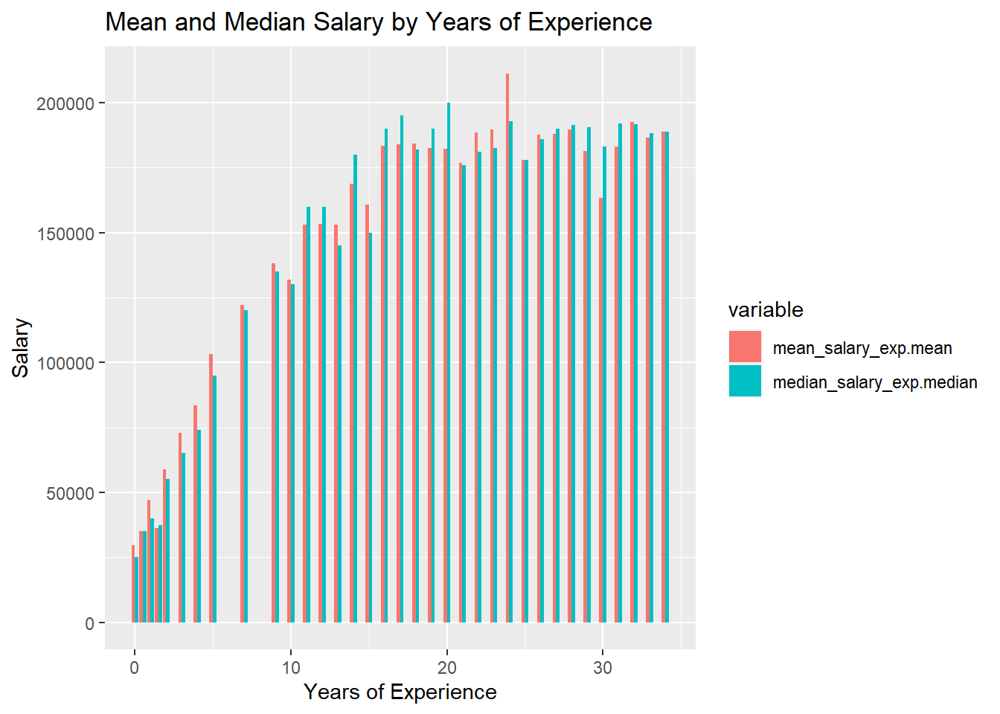

The data set I chose can be seen below. I have chosen salary data which contains entries that list age, gender, education level, role, experience, and monthly salary of each employee.
I got the data at: (https://www.kaggle.com/datasets/mohithsairamreddy/salary-data?resource=download)
Code
workers_tidy <-read_csv("_data/Salary_Data.csv")
Rows: 6704 Columns: 6
── Column specification ────────────────────────────────────────────────────────
Delimiter: ","
chr (3): Gender, Education Level, Job Title
dbl (3): Age, Years of Experience, Salary
ℹ Use `spec()` to retrieve the full column specification for this data.
ℹ Specify the column types or set `show_col_types = FALSE` to quiet this message.
Code
workers_tidy
# A tibble: 6,704 × 6
Age Gender `Education Level` `Job Title` `Years of Experience` Salary
<dbl> <chr> <chr> <chr> <dbl> <dbl>
1 32 Male Bachelor's Software Engineer 5 90000
2 28 Female Master's Data Analyst 3 65000
3 45 Male PhD Senior Manager 15 150000
4 36 Female Bachelor's Sales Associate 7 60000
5 52 Male Master's Director 20 200000
6 29 Male Bachelor's Marketing Analyst 2 55000
7 42 Female Master's Product Manager 12 120000
8 31 Male Bachelor's Sales Manager 4 80000
9 26 Female Bachelor's Marketing Coordi… 1 45000
10 38 Male PhD Senior Scientist 10 110000
# ℹ 6,694 more rows
Cleaning the Data Set
In my opinion, there is nothing I need to do with cleaning the data. It is nicely organized and in a “tidy” form.
The only variable I had to change was some entries contained ‘phD’ instead of ‘PhD’.
Taking a deeper look at the data set, we can see that age is a double, gender is character data (seems to be either male or female), education level is also character data (includes Bachelor’s, Master’s, and PhD), job title is character data, years of experience is a double, and then salary is also a double.
Code
for (idx in2:6) {cat(colnames(workers_tidy)[idx], ": ", sapply(workers_tidy[idx], typeof),"\n")}
Gender : character
Education Level : character
Job Title : character
Years of Experience : double
Salary : double
Potential Research Questions
Many people look into salary data based off of job title and what degree you have. I am interested in analyzing salary data from the other points that this data provides.
I think that many of these variables are overlooked. Many new graduates (including myself) want to make a lot of money, but what is a lot of money. Comparing across my program (Computer Science) the mean salary after graduation is somewhere around $120k. This is a lot of money, but how does this compare to others in my similar boat? Should I be disappointed if a job offers be less?
Although there are plenty other factors that determine salary, such as location/cost of living, I think this data is a good place to start, and can also show trends of salaries so people navigating job offers know what to expect now or in the future.
Descriptive Statistics and Visualizations
Lets do mean/median/range salary by profession, education level, and years of experience.
In this first box, we’ll calculate the mean/median/range for Salary when it is grouped by age, education level, and years of experience.
Code
# Calculating Mean/Median of Salary##### Based on Age# Meanmean_salary_age <- workers_tidy %>%group_by(Age) %>%summarise(mean_sal=mean(Salary))# Medianmedian_salary_age <- workers_tidy %>%group_by(Age) %>%summarise(median=median(Salary))# Rangerange_salary_age <- workers_tidy %>%group_by(Age) %>%summarise(range=max(Salary)-min(Salary))##### Based on Education Level# Meanmean_salary_edu <- workers_tidy %>%group_by(`Education Level`) %>%summarise(mean=mean(Salary))# Medianmedian_salary_edu <- workers_tidy %>%group_by(`Education Level`) %>%summarise(median=median(Salary))# Rangerange_salary_edu <- workers_tidy %>%group_by(`Education Level`) %>%summarise(range=max(Salary)-min(Salary))##### Based on Years of Experience# Meanmean_salary_exp <- workers_tidy %>%group_by(`Years of Experience`) %>%summarise(mean=mean(Salary))# Medianmedian_salary_exp <- workers_tidy %>%group_by(`Years of Experience`) %>%summarise(median=median(Salary))# Rangerange_salary_exp <- workers_tidy %>%group_by(`Years of Experience`) %>%summarise(range=max(Salary)-min(Salary))
Now, we’re going to visualize this data. For each of the variables we will have one or two plots for the mean and median.
First, for age:
Here we can quite clearly see a positive correlation between salary and age. The one thing to note is that it seems the salary plateaus somewhere around 50 years. This could be that people are close to retiring so they are not being promoted as often, and or less people are working.
Code
salary_age <-data.frame(mean_salary_age$Age, mean_salary_age$mean_sal, median_salary_age$median)salary_age <-pivot_longer(salary_age, cols=c('mean_salary_age.mean_sal', 'median_salary_age.median'), names_to='variable',values_to="value")salary_age %>%ggplot(aes(x=mean_salary_age.Age, y=value, fill=variable)) +geom_bar(stat='identity', position='dodge') +labs(title='Mean and Median Salary by Age', y='Salary', x='Age')
In education level we can see a massive increase from High School to College, which is expected. The interesting to note here is the comparison of Master’s to PhD. It seems that Master’s students make less on average, but the median Master’s graduate is making more than the median PhD graduate.
Code
salary_edu <-data.frame(mean_salary_edu$`Education Level`, mean_salary_edu$mean, median_salary_edu$median)salary_edu <-na.omit(salary_edu)salary_edu <-pivot_longer(salary_edu, cols=c('mean_salary_edu.mean', 'median_salary_edu.median'), names_to='variable',values_to="value")salary_edu %>%ggplot(aes(x=mean_salary_edu..Education.Level., y=value, fill=variable)) +geom_bar(stat='identity', position='dodge') +labs(title='Mean and Median Salary by Education Level', y='Salary', x='Education Level')

Next for Years of Experience:
Finally, in years of experience we notice the same trend as in Age. A steady increase between 0 to 15 years of experience, then a steady plateau after that.
Code
salary_exp <-data.frame(mean_salary_exp$`Years of Experience`, mean_salary_exp$mean, median_salary_exp$median)salary_exp <-na.omit(salary_exp)salary_exp <-pivot_longer(salary_exp, cols=c('mean_salary_exp.mean', 'median_salary_exp.median'), names_to='variable',values_to="value")salary_exp %>%ggplot(aes(x=mean_salary_exp..Years.of.Experience., y=value, fill=variable)) +geom_bar(stat='identity', position='dodge') +labs(title='Mean and Median Salary by Years of Experience', y='Salary', x='Years of Experience')

Limitations
These visualizations/statistics only show general statistics. There is a lot of information that may not be useful to someone figuring out what they’re worth. For example, most people in this class and program are going to graduate with a Master’s Degree and this data shows salaries with High School, Bachelor’s and PhDs.
Unanswered Questions
Piggybacking off of the above note, I think there are still plenty of unanswered questions pertaining to more specific insights. I would like to trim the data down a bit more into categories base on Education Level, cutting out High School and maybe combining PhD and Master’s since they could be grouped into a category of “Graduate School”. Then from here breaking them down even further into categories such as Job Title and then examining the various statistics in more detail.
What is unclear
I think these plot are very saturated. What I mean by this, is that there is almost too much data. I think that for the next iteration of the project I am going to split the workers_tidy data into multiple datasets based on Profession. I think this will be more useful to me and other students when trying to compare.
Source Code
---title: "Matt Zambetti: HW3 Submission"author: "Matt Zambetti"date: "2023-06-30"format: html: toc: true code-fold: true code-copy: true code-tools: truecategories: - hw2---# Homework 3```{r setup, include=FALSE}library(tidyverse)knitr::opts_chunk$set(echo =TRUE)```## Choosing the Data SetThe data set I chose can be seen below. I have chosen salary data which contains entries that list age, gender, education level, role, experience, and monthly salary of each employee.I got the data at: (https://www.kaggle.com/datasets/mohithsairamreddy/salary-data?resource=download)```{r}workers_tidy <-read_csv("_data/Salary_Data.csv")workers_tidy```## Cleaning the Data SetIn my opinion, there is nothing I need to do with cleaning the data. It is nicely organized and in a "tidy" form.The only variable I had to change was some entries contained 'phD' instead of 'PhD'.```{r}workers_tidy$`Education Level`[workers_tidy$`Education Level`=='phD'] <-'PhD'```## Narrative About the Data SetTaking a deeper look at the data set, we can see that age is a double, gender is character data (seems to be either male or female), education level is also character data (includes Bachelor's, Master's, and PhD), job title is character data, years of experience is a double, and then salary is also a double.```{r}for (idx in2:6) {cat(colnames(workers_tidy)[idx], ": ", sapply(workers_tidy[idx], typeof),"\n")}```## Potential Research QuestionsMany people look into salary data based off of job title and what degree you have. I am interested in analyzing salary data from the other points that this data provides. I think that many of these variables are overlooked. Many new graduates (including myself) want to make a lot of money, but what is a lot of money. Comparing across my program (Computer Science) the mean salary after graduation is somewhere around $120k. This is a lot of money, but how does this compare to others in my similar boat? Should I be disappointed if a job offers be less? Although there are plenty other factors that determine salary, such as location/cost of living, I think this data is a good place to start, and can also show trends of salaries so people navigating job offers know what to expect now or in the future.## Descriptive Statistics and VisualizationsLets do mean/median/range salary by profession, education level, and years of experience.In this first box, we'll calculate the mean/median/range for Salary when it is grouped by age, education level, and years of experience.```{r}# Calculating Mean/Median of Salary##### Based on Age# Meanmean_salary_age <- workers_tidy %>%group_by(Age) %>%summarise(mean_sal=mean(Salary))# Medianmedian_salary_age <- workers_tidy %>%group_by(Age) %>%summarise(median=median(Salary))# Rangerange_salary_age <- workers_tidy %>%group_by(Age) %>%summarise(range=max(Salary)-min(Salary))##### Based on Education Level# Meanmean_salary_edu <- workers_tidy %>%group_by(`Education Level`) %>%summarise(mean=mean(Salary))# Medianmedian_salary_edu <- workers_tidy %>%group_by(`Education Level`) %>%summarise(median=median(Salary))# Rangerange_salary_edu <- workers_tidy %>%group_by(`Education Level`) %>%summarise(range=max(Salary)-min(Salary))##### Based on Years of Experience# Meanmean_salary_exp <- workers_tidy %>%group_by(`Years of Experience`) %>%summarise(mean=mean(Salary))# Medianmedian_salary_exp <- workers_tidy %>%group_by(`Years of Experience`) %>%summarise(median=median(Salary))# Rangerange_salary_exp <- workers_tidy %>%group_by(`Years of Experience`) %>%summarise(range=max(Salary)-min(Salary))```Now, we're going to visualize this data. For each of the variables we will have one or two plots for the mean and median.First, for age:Here we can quite clearly see a positive correlation between salary and age. The one thing to note is that it seems the salary plateaus somewhere around 50 years. This could be that people are close to retiring so they are not being promoted as often, and or less people are working.```{r}salary_age <-data.frame(mean_salary_age$Age, mean_salary_age$mean_sal, median_salary_age$median)salary_age <-pivot_longer(salary_age, cols=c('mean_salary_age.mean_sal', 'median_salary_age.median'), names_to='variable',values_to="value")salary_age %>%ggplot(aes(x=mean_salary_age.Age, y=value, fill=variable)) +geom_bar(stat='identity', position='dodge') +labs(title='Mean and Median Salary by Age', y='Salary', x='Age')```Next for Education Level:In education level we can see a massive increase from High School to College, which is expected. The interesting to note here is the comparison of Master's to PhD. It seems that Master's students make less on average, but the median Master's graduate is making more than the median PhD graduate.```{r}salary_edu <-data.frame(mean_salary_edu$`Education Level`, mean_salary_edu$mean, median_salary_edu$median)salary_edu <-na.omit(salary_edu)salary_edu <-pivot_longer(salary_edu, cols=c('mean_salary_edu.mean', 'median_salary_edu.median'), names_to='variable',values_to="value")salary_edu %>%ggplot(aes(x=mean_salary_edu..Education.Level., y=value, fill=variable)) +geom_bar(stat='identity', position='dodge') +labs(title='Mean and Median Salary by Education Level', y='Salary', x='Education Level')```Next for Years of Experience:Finally, in years of experience we notice the same trend as in Age. A steady increase between 0 to 15 years of experience, then a steady plateau after that.```{r}salary_exp <-data.frame(mean_salary_exp$`Years of Experience`, mean_salary_exp$mean, median_salary_exp$median)salary_exp <-na.omit(salary_exp)salary_exp <-pivot_longer(salary_exp, cols=c('mean_salary_exp.mean', 'median_salary_exp.median'), names_to='variable',values_to="value")salary_exp %>%ggplot(aes(x=mean_salary_exp..Years.of.Experience., y=value, fill=variable)) +geom_bar(stat='identity', position='dodge') +labs(title='Mean and Median Salary by Years of Experience', y='Salary', x='Years of Experience')```## LimitationsThese visualizations/statistics only show general statistics. There is a lot of information that may not be useful to someone figuring out what they're worth. For example, most people in this class and program are going to graduate with a Master's Degree and this data shows salaries with High School, Bachelor's and PhDs.### Unanswered QuestionsPiggybacking off of the above note, I think there are still plenty of unanswered questions pertaining to more specific insights. I would like to trim the data down a bit more into categories base on Education Level, cutting out High School and maybe combining PhD and Master's since they could be grouped into a category of "Graduate School". Then from here breaking them down even further into categories such as Job Title and then examining the various statistics in more detail.### What is unclearI think these plot are very saturated. What I mean by this, is that there is almost too much data. I think that for the next iteration of the project I am going to split the `workers_tidy` data into multiple datasets based on Profession. I think this will be more useful to me and other students when trying to compare.